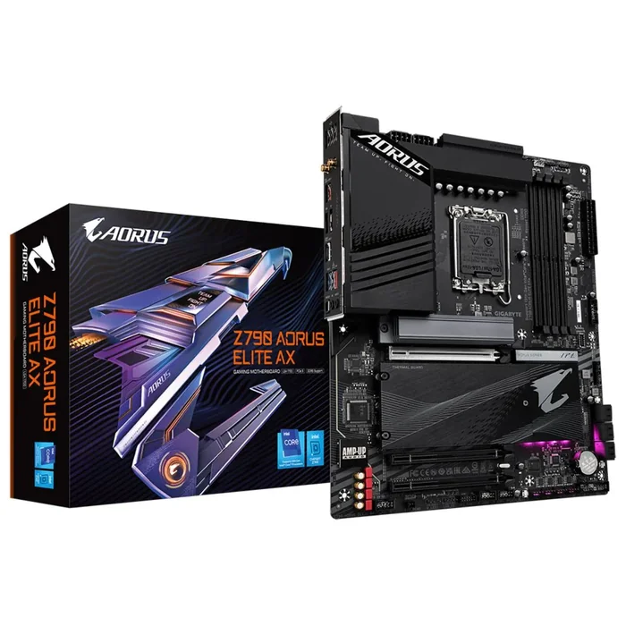

Placă de bază · Gigabyte
Gigabyte Z790 AORUS Elite AX
Soclu: LGA1700 · Chipset: Intel Z790 · Format: ATX · Memorie: 4 × DDR5

Specificații tehnice
| Soclu | LGA1700 |
|---|---|
| Chipset | Intel Z790 |
| Format | ATX |
| Memorie | 4 × DDR5 |
| Frecvență memorie | DDR5-7600 (OC) |
| Memorie maximă | 256 GB |
| Sloturi PCIe | 1 × PCIe 5.0 x16, 2 × PCIe 4.0 x16 (x4) |
| Sloturi M.2 | 4 (PCIe 4.0 x4) |
| Porturi SATA | 6 |
| Rețea | Realtek 2,5 GbE, Wi-Fi 6E |
| Ieșiri video | HDMI, DisplayPort |
Despre categoria placă de bază
Placa de bază stabilește ce procesor și ce tip de memorie pot fi utilizate, numărul de unități de stocare și porturile disponibile. Fiind componenta care se înlocuiește cel mai rar, selecția ei necesită atenție.